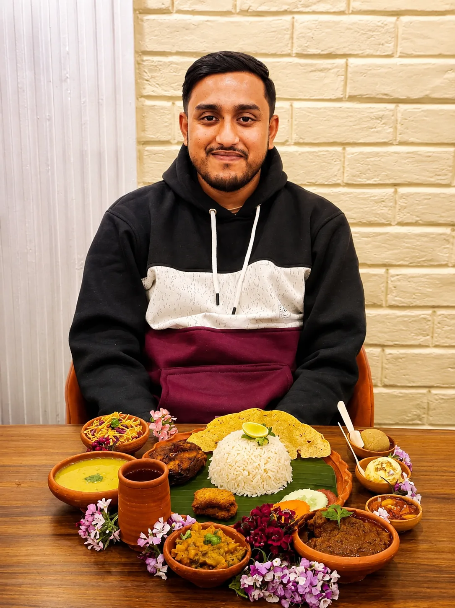
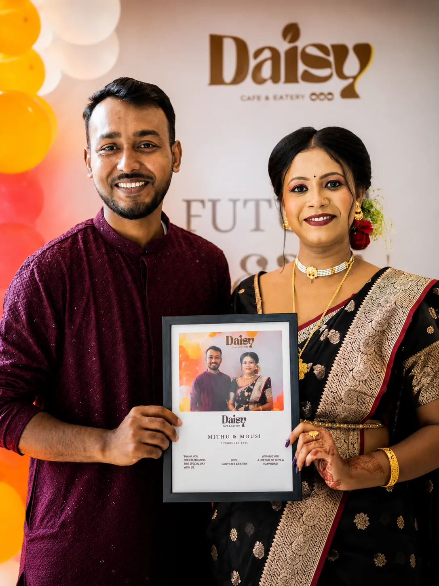
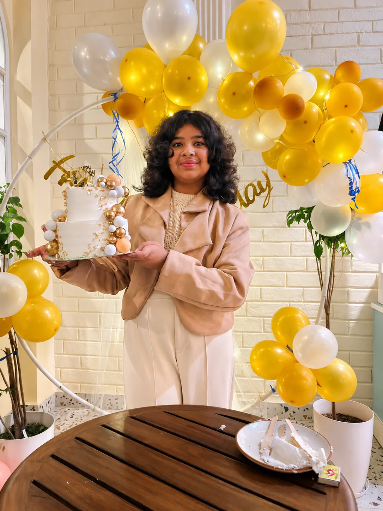
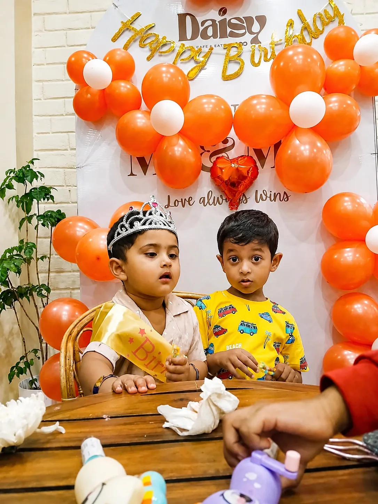
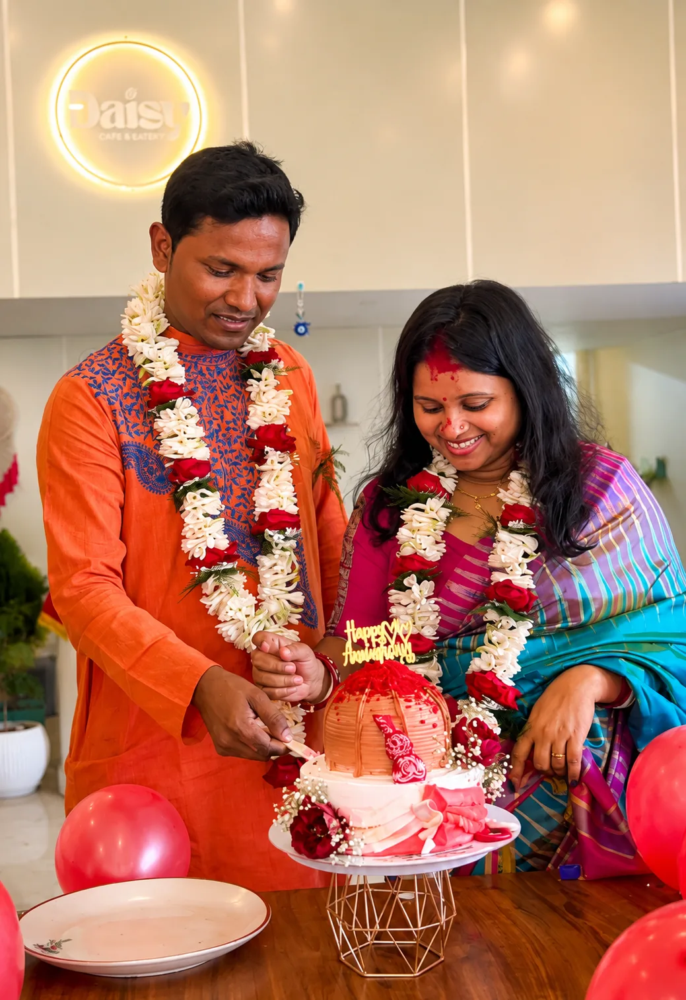

01Moments at Daisy
From carefully brewed coffee and comforting meals to desserts, custom cakes and celebrations — make your next visit a Daisy moment.





Daisy began on 25th December, 2025, with a simple dream — to create a place in Debra where good food, beautiful moments and a warm sense of belonging could come together.
From carefully prepared food and comforting cups of coffee to conversations that last a little longer, every detail is shaped by hygiene, quality, freshness and care.
Read our storyReal beans, a signature blend, freshly roasted and expertly brewed with an imported Italian Astoria Espresso setup.
Indian, Chinese, Continental and Tandoor favourites, plus snacks, sandwiches, burgers, pasta, noodles and rice.
Brownies, cheesecakes, scoops and celebration cakes made specially for your occasion, theme and people.
We source carefully selected Arabica and Robusta beans from South India, then roast and pack them with care using a specially developed blend and roast approach for hot and cold brews.
Discover Daisy Coffee
Experienced baristas, precise extraction and an imported Italian Astoria Espresso setup bring the coffee story to life.
Birthdays, anniversaries, surprises, little milestones and big moments — Daisy can help with custom cakes, decoration and hosting.
Plan a relaxed birthday visit with a custom cake and decoration support.
Create a simple celebration around coffee, food, dessert and a meaningful moment.
Tell Daisy your occasion, guest count and ideas and discuss the available options.
Daisy is in Debra bazar, Paschim Medinipur, on National Highway 16 on the side towards the Kolkata route.
Approx. 6 km
Approx. 5 km / 5 mins by car or bike
Approx. 34 km / 35 mins
Approx. 30 km / 45 mins
Distances and travel times are approximate and may vary depending on route and traffic.
Open in Google MapsFree Wi-Fi, a free book corner, free parking and a menu built for coffee breaks, meals and longer conversations.
Delivery is available within an 8 km radius of Daisy. Location eligibility is checked before ordering.
Birthdays, anniversaries and surprises with custom cakes, decoration and planning support.
The Daisy loyalty card includes a 50% off benefit on your 10th coffee, powered by Astoria.
Daisy is a cafe and eatery in Debra suited to coffee, dessert, dinner and relaxed visits. Celebration planning is also available for special moments.
Daisy offers dine-in food in Debra, with Indian, Chinese, Continental and Tandoor choices alongside drinks and desserts.
Daisy serves hot-brew and cold-brew coffee in Debra, including Espresso, Americano, Cappuccino, Latte, Mocha, iced coffee and frappes.
Daisy combines coffee and desserts, with choices including brownies, cheesecakes, ice cream-based desserts and coffee drinks.
Daisy is in Debra on the NH16 route towards Kolkata and can be considered for a coffee, food or meal break during a Kolkata–Kharagpur journey.
Daisy is located in Debra along the NH16 route, with dine-in food, coffee, drinks and desserts available for a meal stop.
Daisy is in Debra, roughly on the Kolkata–Kharagpur route, and offers coffee, food, desserts and dine-in service.
Daisy serves Indian, Chinese, Continental and Tandoor food, along with snacks, drinks, desserts and custom cakes.
We’ll open WhatsApp with your details so Daisy can confirm availability.